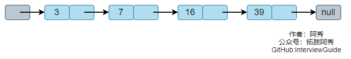
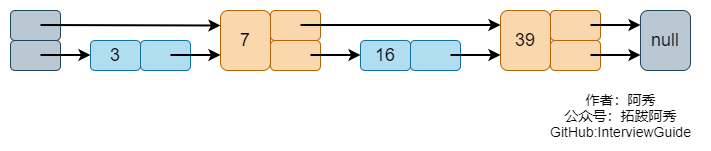
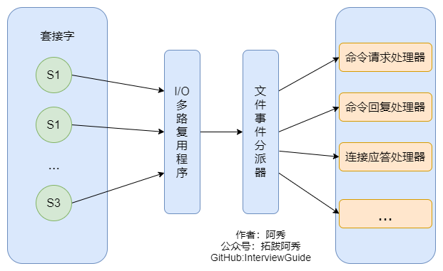

Redis
这是六则或许对你有些许帮助的信息:
⭐️1、阿秀与朋友合作开发了一个编程资源网站，目前已经收录了很多不错的学习资源和黑科技（附带下载地址），如过你想要寻求合适的编程资源，欢迎体验以及推荐自己认为不错的资源，众人拾柴火焰高，我为人人，人人为我🔥！
2、👉23年5月份阿秀从字节跳动离职跳槽到某外企期间，为方便自己找工作，增加上岸几率，我自己从0开发了一个互联网中大厂面试真题解析网站，包括两个前端和一个后端。能够定向查看某些公司的某些岗位面试真题，比如我想查一下行业为互联网，公司为字节跳动，考察岗位为后端，考察时间为最近一年之类的面试题有哪些？
4、😍免费分享阿秀个人学习计算机以来收集到的免费学习资源，点此白嫖；也记录一下自己以前买过的不错的计算机书籍、网络专栏和垃圾付费专栏；也记录一下自己以前买过的不错的计算机书籍、网络专栏和垃圾付费专栏
5、🚀如果你想在校招中顺利拿到更好的offer，阿秀建议你多看看前人踩过的坑和留下的经验，事实上你现在遇到的大多数问题你的学长学姐师兄师姐基本都已经遇到过了。
6、🔥 欢迎准备计算机校招的小伙伴加入我的学习圈子，一个人踽踽独行不如一群人报团取暖，圈子里沉淀了很多过去21/22/23/24/25届学长学姐的经验和总结，好好跟着走下去的，最后基本都可以拿到不错的offer！如果你需要《阿秀的学习笔记》网站中📚︎校招八股文相关知识点的PDF版本的话，可以点此下载 。
1、听说过Redis吗？它是什么？
Redis是一个数据库，不过与传统数据库不同的是Redis的数据库是存在内存中，所以读写速度非常快，因此 Redis被广泛应用于缓存方向。
除此之外，Redis也经常用来做分布式锁，Redis提供了多种数据类型来支持不同的业务场景。除此之外，Redis 支持事务持久化、LUA脚本、LRU驱动事件、多种集群方案。
2、Redis的五种数据结构整理
简单动态字符串(Simple Dynamic String，SDS)
Redis没有直接使用C语言传统的字符串，而是自己构建了一种名为简单动态字符串（Simple dynamic string，SDS）的抽象类型，并将SDS用作Redis的默认字符串表示。
其实SDS等同于C语言中的char * ，但它可以存储任意二进制数据，不能像C语言字符串那样以字符’\0’来标识字符串的结 束，因此它必然有个长度字段。
定义
| C | |
|---|---|
优点
- 获取字符串长度的复杂度为O(1)。
- 杜绝缓冲区溢出。
- 减少修改字符串长度时所需要的内存重分配次数。
- 二进制安全。
- 兼容部分C字符串函数。
它具有很常规的 set/get 操作，value 可以是String也可以是数字，一般做一些复杂的计数功能的缓存。
链表
当有一个列表键包含了数量比较多的元素，又或者列表中包含的元素都是比较长的额字符串时，Redis就会使用链表作为列表建的底层实现。
节点底层结构
| C | |
|---|---|
list底层结构
| C | |
|---|---|
特性
- 链表被广泛用于实现Redis的各种功能，比如列表建、发布与订阅、慢查询、监视器等。
- 每个链表节点由一个listNode结构来表示，每个节点都有一个指向前置节点和后置节点的指针，所以Redis的链表实现是双端链表。
- 每个链表使用一个list结构表示，这个结构带有表头节点指针、表尾节点指针，以及链表长度等信息。
- 因为链表表头的前置节点和表尾节点的后置节点都指向NULL，所以Redis的链表实现是无环链表。
- 通过为链表设置不同的类型特定函数，Redis的链表可以用于保存各种不同类型的值。
字典
字典的底层是哈希表，类似 C++中的 map ，也就是键值对。
哈希表
| C | |
|---|---|
哈希算法
当字典被用作数据库的底层实现，或者哈希键的底层实现时，Redis使用MurmurHash算法。
这种算法的优点在于即使输入的键是规律的，算法仍能给出一个个很好的随机分布性，并且算法的计算速度非常快。
哈希冲突的解决方式
Redis的哈希表使用链地址法来解决键冲突，每个哈希表节点都有一个next指针，多个哈希表节点可以用这个单向链表连接起来，这就解决了键冲突的问题。
特性
- 字典被广泛用于实现Redis的各种功能，其中包括数据库和哈希键。
- Redis中的字典使用哈希表作为底层结构实现，每个字典带有两个哈希表，一个平时使用，另一个仅在进行rehash时使用。
- Redis使用MurmurHash2算法来计算键的哈希值。
- 哈希表使用链地址法来解决键冲突。
跳跃表
先看这样一张图： 
如上图，我们要查找一个元素，就需要从头节点开始遍历，直到找到对应的节点或者是第一个大于要查找的元素的节点（没找到）。时间复杂度为O(N)。
这个查找效率是比较低的，但如果我们把列表的某些节点拔高一层，如下图，例如把每两个节点中有一个节点变成两层。那么第二层的节点只有第一层的一半，查找效率也就会提高。

查找的步骤是从头节点的顶层开始，查到第一个大于指定元素的节点时，退回上一节点，在下一层继续查找。
比如我们要查找16：
- 从头节点的最顶层开始，先到节点7。
- 7的下一个节点是39，大于16，因此我们退回到7
- 从7开始，在下一层继续查找，就可以找到16。
这个例子中遍历的节点不比一维列表少，但是当节点更多，查找的数字更大时，这种做法的优势就体现出来了。还是上面的例子，如果我们要查找的是39，那么只需要访问两个节点（7、39）就可以找到了。这比一维列表要减少一半的数量。
为了避免插入操作的时间复杂度是O(N)，skiplist每层的数量不会严格按照2:1的比例，而是对每个要插入的元素随机一个层数。
随机层数的计算过程如下：
- 每个节点都有第一层
- 那么它有第二层的概率是p，有第三层的概率是p*p
- 不能超过最大层数
zskiplistNode
| C | |
|---|---|
一般来说，层的数量越多，访问其他节点的速度越快。
zskipList
| C | |
|---|---|
特性
- 跳跃表是有序集合的底层实现之一
- Redis的跳跃表实现由zskiplist和zskiplistNode两个结构组成，其中zskiplist用于保存跳跃表信息（比如表头节点、表尾节点、长度），而zskiplistNode则用于表示跳跃表节点
- 每个跳跃表节点的层高都是1至32之间的随机数
- 在同一个跳跃表中，多个节点可以包含相同的分值，但每个节点的成员对象必须是唯一的。
- 跳跃表中的节点按照分值大小进行排序，当分值相同时，节点按照成员对象的大小进行排序。
- 跳表是一种实现起来很简单，单层多指针的链表，它查找效率很高，堪比优化过的二叉平衡树，且比平衡树的实现简单。
压缩列表
压缩列表(ziplist)是列表键和哈希键的底层实现之一。当一个列表键只包含少量列表项，并且每个列表项要么就是小整数值，要么就是长度比较短的字符串，那么Redis就会使用压缩列表来做列表键的底层实现。
特性
看他的名字就能看出来，是为了节省内存造的列表结构。
3、Redis常见数据结构以及使用场景分别是什么？
String
String数据结构是简单的key-value类型，value其实不仅可以是String，也可以是数字。 常规key-value缓存应用； 常规计数：微博数，粉丝数等。
Hash
Hash 是一个 string 类型的 field 和 value 的映射表，hash 特别适合用于存储对象，后续操作的时候，你可以直接仅 仅修改这个对象中的某个字段的值。 比如我们可以Hash数据结构来存储用户信息，商品信息等。
List
list 就是链表，Redis list 的应用场景非常多，也是Redis最重要的数据结构之一，比如微博的关注列表，粉丝列表， 消息列表等功能都可以用Redis的 list 结构来实现。
Redis list 的实现为一个双向链表，即可以支持反向查找和遍历，更方便操作，不过带来了部分额外的内存开销。
另外可以通过 lrange 命令，就是从某个元素开始读取多少个元素，可以基于 list 实现分页查询，这个很棒的一个功 能，基于 Redis 实现简单的高性能分页，可以做类似微博那种下拉不断分页的东西（一页一页的往下走），性能高。
Set
set 对外提供的功能与list类似是一个列表的功能，特殊之处在于 set 是可以自动排重的。
当你需要存储一个列表数据，又不希望出现重复数据时，set是一个很好的选择，并且set提供了判断某个成员是否在 一个set集合内的重要接口，这个也是list所不能提供的。可以基于 set 轻易实现交集、并集、差集的操作。
比如：在微博应用中，可以将一个用户所有的关注人存在一个集合中，将其所有粉丝存在一个集合。
Redis可以非常 方便的实现如共同关注、共同粉丝、共同喜好等功能。这个过程也就是求交集的过程，具体命令如下：sinterstore key1 key2 key3将交集存在key1内。
Sorted Set
和set相比，sorted set增加了一个权重参数score，使得集合中的元素能够按score进行有序排列。
举例： 在直播系统中，实时排行信息包含直播间在线用户列表，各种礼物排行榜，弹幕消息（可以理解为按消息维 度的消息排行榜）等信息，适合使用 Redis 中的 SortedSet 结构进行存储。
4、有MySQL不就够用了吗？为什么要用Redis这种新的数据库？
主要是因为 Redis 具备高性能和高并发两种特性。
1、高性能
假如用户第一次访问数据库中的某些数据。这个过程会比较慢，因为是从硬盘上读取的。将该用户访问的数据存在缓存中，这样下一次再访问这些数据的时候就可以直接从缓存中获取了。
操作缓存就是直接操作内存，所以速度相当快。如果数据库中的对应数据改变的之后，同步改变缓存中相应的数据即可！
2、高并发
直接操作缓存能够承受的请求是远远大于直接访问数据库的，所以我们可以考虑把数据库中的部分数据转移到缓存中去，这样用户的一部分请求会直接到缓存这里而不用经过数据库。
5、C++中的Map也是一种缓存型数据结构，为什么不用Map，而选择Redis做缓存？
严格意义上来说缓存分为本地缓存和分布式缓存。
那以 C++ 语言为例，我们可以使用 STL 下自带的容器 map 来实现缓存，但只能实现本地缓存，它最主要的特点是轻量以及快速，但是其生命周期随着程序的销毁而结束，并且在多实例的情况下，每个实例都需要各自保存一份缓存，缓存不具有一致性。
使用 Redis 或 Memcached 之类的称为分布式缓存，在多实例的情况下，各实例共享一份缓存数据，缓存具有一致性。
这是Redis或者Memcached的优点所在，但它也有缺点，那就是需要保持 Redis 或 Memcached服务的高可用，整个程序架构上较为复杂。
6、使用Redis的好处有哪些？
1、访问速度快，因为数据存在内存中，类似于Java中的HashMap或者C++中的哈希表（如unordered_map/unordered_set），这两者的优势就是查找和操作的时间复杂度都是O(1)
2、数据类型丰富，支持String，list，set，sorted set，hash这五种数据结构
3、支持事务，Redis中的操作都是原子性，换句话说就是对数据的更改要么全部执行，要么全部不执行，这就是原子性的定义
4、特性丰富：Redis可用于缓存，消息，按key设置过期时间，过期后将会自动删除。
7、Memcached与Redis的区别都有哪些？
1、存储方式
- Memecache把数据全部存在内存之中，断电后会挂掉，没有持久化功能，数据不能超过内存大小。
- Redis有部份存在硬盘上，这样能保证数据的持久性。
2、数据支持类型
- Memcache对数据类型支持相对简单,只有String这一种类型
- Redis有复杂的数据类型。Redis不仅仅支持简单的k/v类型的数据，同时还提供 list，set，zset，hash等数据结构的存储。
3、使用底层模型不同
- 它们之间底层实现方式 以及与客户端之间通信的应用协议不一样。
- Redis直接自己构建了VM 机制 ，因为一般的系统调用系统函数的话，会浪费一定的时间去移动和请求。
4、集群模式：Memcached没有原生的集群模式，需要依靠客户端来实现往集群中分片写入数据；但是 Redis 目前 是原生支持 cluster 模式的.
5、Memcached是多线程，非阻塞IO复用的网络模型；Redis使用单线程的多路 IO 复用模型。
6、Value 值大小不同：Redis 最大可以达到 512MB；Memcached 只有 1MB。
8、Redis比Memcached的优势在哪里？
1、Memcached所有的值均是简单字符串，Redis作为其替代者，支持更为丰富的数据类型
2、Redis 的速度比 Memcached 快很多
3、Redis可以做到持久化数据
9、缓存中常说的热点数据和冷数据是什么？
其实就是名字上的意思，热数据就是访问次数较多的数据，冷数据就是访问很少或者从不访问的数据。
需要注意的是只有热点数据，缓存才有价值。
对于冷数据而言，大部分数据可能还没有再次访问到就已经被挤出内存，不仅占用内存，而且价值不大。
数据更新前至少读取两次，缓存才有意义。这个是最基本的策略，如果缓存还没有起作用就失效了，那就没有太大价值了。
10、Redis 为什么是单线程的而不采用多线程方案？
这主要是基于一种客观原因来考虑的。因为Redis是基于内存的操作，CPU不是Redis的瓶颈，Redis的瓶颈最有可能是机器内存的大小或者网络带宽。
既然单线程容易实现，而且CPU不会成为瓶颈，那就顺理成章地采用单线程的方案了（毕竟采用多线程会有很多麻烦！）
11、单线程的Redis为什么这么快？
主要是有三个原因：
1、Redis的全部操作都是纯内存的操作；
2、Redis采用单线程，有效避免了频繁的上下文切换；
3，采用了非阻塞I/O多路复用机制。
12、了解Redis的线程模型吗？可以大致说说吗？
如果你打开看过 Redis 的源码就会发现Redis 内部使用文件事件处理器 file event handler，这个文件事件处理器是单线程的，所以 Redis 才叫做单线程的模型。
它采用 IO 多路复用机制同时监听多个 socket，根据 socket 上的事件来选择对应的事件处理器进行处理。

文件事件处理器的结构包含 4 个部分：
- 多个 socket
- IO多路复用程序
- 文件事件分派器
- 事件处理器（连接应答处理器、命令请求处理器、命令回复处理器）
使用 I/O 多路复用程序来同时监听多个套接字， 并根据套接字目前执行的任务来为套接字关联不同的事件处理器。
当被监听的套接字准备好执行连接应答（accept）、读取（read）、写入（write）、关闭（close）等操作时， 与操作相对应的文件事件就会产生， 这时文件事件处理器就会调用套接字之前关联好的事件处理器来处理这些事件。
多个 socket 可能会并发产生不同的操作，每个操作对应不同的文件事件，但是 IO 多路复用程序会监听多个 socket，会将 socket 产生的事件放入队列中排队，事件分派器每次从队列中取出一个事件，把该事件交给对应的事件处理器进行处理。
一句话总结：“I/O 多路复用程序负责监听多个套接字， 并向文件事件分派器传送那些产生了事件的套接字。”
13、Redis设置过期时间的两种方案是什么？
Redis中有个设置时间过期的功能，即对存储在 Redis 数据库中的值可以设置一个过期时间。
作为一个缓存数据库， 这是非常实用的，比如一些 token 或者登录信息，尤其是短信验证码都是有时间限制的，按照传统的数据库处理方式，一般都是自己判断过期，这样无疑会严重影响项目性能。
我们 set key 的时候，都可以给一个 expire time，就是过期时间，通过过期时间我们可以指定这个 key 可以存活的时间，主要可采用定期删除和惰性删除两种方案。
1、定期删除
Redis默认是每隔 100ms 就随机抽取一些设置了过期时间的key，检查其是否过期，如果过期就删除。
注意这里是随机抽取的。为什么要随机呢？你想一想假如 Redis 存了几十万个 key ，每隔100ms就遍历所 有的设置过期时间的 key 的话，就会给 CPU 带来很大的负载！
2、惰性删除
定期删除可能会导致很多过期 key 到了时间并没有被删除掉，所以就有了惰性删除。
它是指某个键值过期后,此键值不会马上被删除,而是等到下次被使用的时候,才会被检查到过期，此时才能得到删除,惰性删除的缺点很明显是浪费内存。
除非你的系统去查一下那个 key，才会被Redis给删除掉。这就是所谓的惰性删除！
14、定期和惰性一定能保证删除数据吗？如果不能，Redis会有什么应对措施？
并不能保证一定删除，Redsi有一个Redis 内存淘汰机制来确保数据一定会被删除。
首先介一下定期删除和惰性删除的工作流程：
1、定期删除，Redis默认每个100ms检查，是否有过期的key,有过期key则删除。需要说明的是，Redis不是每个100ms将所有的key检查一次，而是随机抽取进行检查(如果每隔100ms,全部key进行检查，Redis岂不是卡死)。因此，如果只采用定期删除策略，会导致很多key到时间没有删除。
2、于是，惰性删除派上用场。也就是说在你获取某个key的时候，Redis会检查一下，这个key如果设置了过期时间那么是否过期了？如果过期了此时就会删除。
3、采用定期删除+惰性删除就没其他问题了么? 不是的，如果定期删除没删除key。然后你也没即时去请求key，也就是说惰性删除也没生效。这样，Redis
4、内存会越来越高。那么就应该采用内存淘汰机制。
在Redis.conf中有一行配置:maxmemory-policy volatile-lru
该配置就是配内存淘汰策略的，主要有以下六种方案：
1、volatile-lru：从已设置过期时间的数据集（server.db[i].expires）中挑选最近最少使用的数据淘汰
2、volatile-ttl：从已设置过期时间的数据集（server.db[i].expires）中挑选将要过期的数据淘汰
3、volatile-random：从已设置过期时间的数据集（server.db[i].expires）中任意选择数据淘汰
4、allkeys-lru：从数据集（server.db[i].dict）中挑选最近最少使用的数据淘汰
5、allkeys-random：从数据集（server.db[i].dict）中任意选择数据淘汰
6、no-enviction（驱逐）：禁止驱逐数据，新写入操作会报错
ps：如果没有设置 expire 的key, 不满足先决条件(prerequisites); 那么 volatile-lru, volatile-random 和 volatile-ttl 策略的行为, 和 noeviction(不删除) 基本上一致。
15、Redis对于大量的请求，是怎样处理的？
1、Redis是一个单线程程序，也就说同一时刻它只能处理一个客户端请求；
2、Redis是通过IO多路复用（select，epoll，kqueue，依据不同的平台，采取不同的实现）来处理多个客户端请求。
16、缓存雪崩、缓存穿透、缓存预热、缓存更新、缓存击穿、缓存降级全搞定！
缓存雪崩
缓存雪崩指的是缓存同一时间大面积的失效，所以，后面的请求都会落到数据库上，造成数据库短时间内承受大量请求而崩掉。
我们可以简单的理解为：由于原有缓存失效，新缓存未到期间(例如：我们设置缓存时采用了相同的过期时间，在同一时刻出现大面积的缓存过期)，所有原本应该访问缓存的请求都去查询数据库了，而对数据库CPU和内存造成巨大压力，严重的会造成数据库宕机，从而形成一系列连锁反应，造成整个系统崩溃。
解决办法
- 事前：尽量保证整个 Redis 集群的高可用性，发现机器宕机尽快补上，选择合适的内存淘汰策略。
- 事中：本地ehcache缓存 + hystrix限流&降级，避免MySQL崩掉， 通过加锁或者队列来控制读数据库写缓存的线程数量。比如对某个key只允许一个线程查询数据和写缓存，其他线程等待。
- 事后：利用 Redis 持久化机制保存的数据尽快恢复缓存
缓存穿透
一般是黑客故意去请求缓存中不存在的数据，导致所有的请求都落到数据库上，造成数据库短时间内承受大量 请求而崩掉。
这也看不懂？那我再换个说法好了。
缓存穿透是指查询一个一定不存在的数据，由于缓存不命中，接着查询数据库也无法查询出结果，因此也不会写入到缓存中，这将会导致每个查询都会去请求数据库，造成缓存穿透。
解决办法
1、布隆过滤器
这是最常见的一种解决方法了，它是将所有可能存在的数据哈希到一个足够大的bitmap中，一个一定不存在的数据会被 这个bitmap拦截掉，从而避免了对底层存储系统的查询压 力。
对所有可能查询的参数以hash形式存储，在控制层先进行校验，不符合则丢弃，从而避免了对底层存储系统的查询压力；
这里稍微科普一下布隆过滤器。
布隆过滤器是引入了k(k>1)k(k>1)个相互独立的哈希函数，保证在给定的空间、误判率下，完成元素判重的过程。 它的优点是空间效率和查询时间都远远超过一般的算法，缺点是有一定的误识别率和删除困难。
该算法的核心思想就是利用多个不同的Hash函数来解决“冲突”。Hash存在一个冲突（碰撞）的问题，用同一个Hash得到的两个URL的值有可能相同。
为了减少冲突，我们可以多引入几个Hash，如果通过其中的一个Hash值我们得出某元素不在集合中，那么该元素肯定不在集合中。只有在所有的Hash函数告诉我们该元素在集合中时，才能确定该元素存在于集合中。这便是布隆过滤器的基本思想，一般用于在大数据量的集合中判定某元素是否存在。
2、缓存空对象
当存储层不命中后，即使返回的空对象也将其缓存起来，同时会设置一个过期时间，之后再访问这个数据将会从缓存中获取，保护了后端数据源；
如果一个查询返回的数据为空（不管是数据不存 在，还是系统故障），我们仍然把这个空结果进行缓存，但它的过期时间会很短，最长不超过五分钟。
但是这种方法会存在两个问题：
1、如果空值能够被缓存起来，这就意味着缓存需要更多的空间存储更多的键，因为这当中可能会有很多的空值的键；
2、即使对空值设置了过期时间，还是会存在缓存层和存储层的数据会有一段时间窗口的不一致，这对于需要保持一致性的业务会有影响。
我们可以从适用场景和维护成本两方面对这两种汇总方法进行一个简单比较：
适用场景：
-
缓存空对象适用于1、数据命中不高 2、数据频繁变化且实时性较高 ；
-
布隆过滤器适用1、数据命中不高 2、数据相对固定即实时性较低
维护成本：
-
缓存空对象的方法适合1、代码维护简单 2、需要较多的缓存空间 3、数据会出现不一致的现象；
-
布隆过滤器适合 1、代码维护较复杂 2、缓存空间要少一些
缓存预热
缓存预热是指系统上线后，将相关的缓存数据直接加载到缓存系统。
这样就可以避免在用户请求的时候，先查询数据库，然后再将数据缓存的问题，用户会直接查询事先被预热的缓存数据！
解决思路 1、直接写个缓存刷新页面，上线时手工操作下； 2、数据量不大，可以在项目启动的时候自动进行加载； 3、定时刷新缓存；
缓存更新
除了缓存服务器自带的缓存失效策略之外（Redis默认的有6中策略可供选择），我们还可以根据具体的业务需求进行自定义的缓存淘汰，常见的策略有两种：定时删除和惰性删除，其中：
- 定时删除：定时去清理过期的缓存；
- 惰性删除：当有用户请求过来时，再判断这个请求所用到的缓存是否过期，过期的话就去底层系统得到新数据并更新缓存。
两者各有优劣，第一种的缺点是维护大量缓存的key是比较麻烦的；第二种的缺点就是每次用户请求过来都要判断缓存失效，逻辑相对比较复杂！具体用哪种方案，大家可以根据自己的应用场景来权衡。
缓存击穿
缓存击穿，是指一个key非常热点，在不停的扛着大并发，大并发集中对这一个点进行访问，当这个key在失效的瞬间，持续的大并发就穿破缓存，直接请求数据库，就像在一个屏障上凿开了一个洞。
比如常见的电商项目中，某些货物成为“爆款”了，可以对一些主打商品的缓存直接设置为永不过期。
即便某些商品自己发酵成了爆款，也是直接设为永不过期就好了。mutex key互斥锁基本上是用不上的，有个词叫做大道至简。
缓存降级
当访问量剧增、服务出现问题（如响应时间慢或不响应）或非核心服务影响到核心流程的性能时，仍然需要保证服务还是可用的，即使是有损服务。
系统可以根据一些关键数据进行自动降级，也可以配置开关实现人工降级。
降级的最终目的是保证核心服务可用，即使是有损的。而且有些服务是无法降级的（如加入购物车、结算）。
以参考日志级别设置预案： （1）一般：比如有些服务偶尔因为网络抖动或者服务正在上线而超时，可以自动降级； （2）警告：有些服务在一段时间内成功率有波动（如在95~100%之间），可以自动降级或人工降级，并发送告警； （3）错误：比如可用率低于90%，或者数据库连接池被打爆了，或者访问量突然猛增到系统能承受的最大阀值，此时可以根据情况自动降级或者人工降级； （4）严重错误：比如因为特殊原因数据错误了，此时需要紧急人工降级。
服务降级的目的，是为了防止Redis服务故障，导致数据库跟着一起发生雪崩问题。
因此，对于不重要的缓存数据，可以采取服务降级策略，例如一个比较常见的做法就是，Redis出现问题，不去数据库查询，而是直接返回默认值给用户。
17、假如MySQL有1000万数据，采用Redis作为中间缓存，取其中的10万，如何保证Redis中的数据都是热点数据？
可以使用Redis的数据淘汰策略，Redis 内存数据集大小上升到一定大小的时候，就会施行这种策略。具体说来，主要有 6种内存淘汰策略：
-
voltile-lru：从已设置过期时间的数据集（server.db[i].expires）中挑选最近最少使用的数据淘汰
-
volatile-ttl：从已设置过期时间的数据集（server.db[i].expires）中挑选将要过期的数据淘汰
-
volatile-random：从已设置过期时间的数据集（server.db[i].expires）中任意选择数据淘汰
-
allkeys-lru：从数据集（server.db[i].dict）中挑选最近最少使用的数据淘汰
-
allkeys-random：从数据集（server.db[i].dict）中任意选择数据淘汰
-
no-enviction（驱逐）：禁止驱逐数据
18、Redis持久化机制可以说一说吗？
Redis是一个支持持久化的内存数据库，通过持久化机制把内存中的数据同步到硬盘文件来保证数据持久化。当Redis重启后通过把硬盘文件重新加载到内存，就能达到恢复数据的目的。
很多时候我们需要持久化数据也就是将内存中的数据写入到硬盘里面，大部分原因是为了之后重用数据（比如重启机 器、机器故障之后回复数据），或者是为了防止系统故障而将数据备份到一个远程位置。
实现：单独创建fork()一个子进程，将当前父进程的数据库数据复制到子进程的内存中，然后由子进程写入到临时文件中，持久化的过程结束了，再用这个临时文件替换上次的快照文件，然后子进程退出，内存释放。
以下有两种持久化机制
快照（snapshotting）持久化（RDB持久化）
Redis可以通过创建快照来获得存储在内存里面的数据在某个时间点上的副本。Redis创建快照之后，可以对快照进行 备份，可以将快照复制到其他服务器从而创建具有相同数据的服务器副本（Redis主从结构，主要用来提高Redis性 能），还可以将快照留在原地以便重启服务器的时候使用。
快照持久化是Redis默认采用的持久化方式，在Redis.conf配置文件中默认有此下配置：
| Bash | |
|---|---|
AOF（append-only file）持久化
与快照持久化相比，AOF持久化的实时性更好，因此已成为主流的持久化方案。默认情况下Redis没有开启 AOF（append only file）方式的持久化，可以通过appendonly参数开启：appendonly yes
开启AOF持久化后每执行一条会更改Redis中的数据的命令，Redis就会将该命令写入硬盘中的AOF文件。AOF文件的 保存位置和RDB文件的位置相同，都是通过dir参数设置的，默认的文件名是appendonly.aof。
在Redis的配置文件中存在三种不同的 AOF 持久化方式，它们分别是：
| Bash | |
|---|---|
为了兼顾数据和写入性能，用户可以考虑 appendfsync everysec选项 ，让Redis每秒同步一次AOF文件，Redis性能 几乎没受到任何影响。
而且这样即使出现系统崩溃，用户最多只会丢失一秒之内产生的数据。当硬盘忙于执行写入操作的时候，Redis还会优雅的放慢自己的速度以便适应硬盘的最大写入速度。
Redis 4.0 对于持久化机制的优化
Redis 4.0 开始支持 RDB 和 AOF 的混合持久化（默认关闭，可以通过配置项 aof-use-rdb-preamble 开启）。
如果把混合持久化打开，AOF 重写的时候就直接把 RDB 的内容写到 AOF 文件开头。这样做的好处是可以结合 RDB 和 AOF 的优点, 快速加载同时避免丢失过多的数据。
当然缺点也是有的， AOF 里面的 RDB 部分是压缩格式不再是 AOF 格式，可读性较差。
19、AOF重写了解吗？可以简单说说吗？
AOF重写可以产生一个新的AOF文件，这个新的AOF文件和原有的AOF文件所保存的数据库状态一样，但体积更小。
AOF重写是一个有歧义的名字，该功能是通过读取数据库中的键值对来实现的，程序无须对现有AOF文件进行任伺读 入、分析或者写入操作。
在执行 BGREWRITEAOF 命令时，Redis 服务器会维护一个 AOF 重写缓冲区，该缓冲区会在子进程创建新AOF文件期间，记录服务器执行的所有写命令。
当子进程完成创建新AOF文件的工作之后，服务器会将重写缓冲区中的所有内容 追加到新AOF文件的末尾，使得新旧两个AOF文件所保存的数据库状态一致。最后，服务器用新的AOF文件替换旧的 AOF文件，以此来完成AOF文件重写操作。
20、是否使用过Redis集群？集群的原理是什么？
Redis Sentinel（哨兵）着眼于高可用，在master宕机时会自动将slave提升为master，继续提供服务。
Sentinel（哨兵）可以监听集群中的服务器，并在主服务器进入下线状态时，自动从服务器中选举出新的主服务器。
Redis Cluster（集群）着眼于扩展性，在单个Redis内存不足时，使用Cluster进行分片存储。